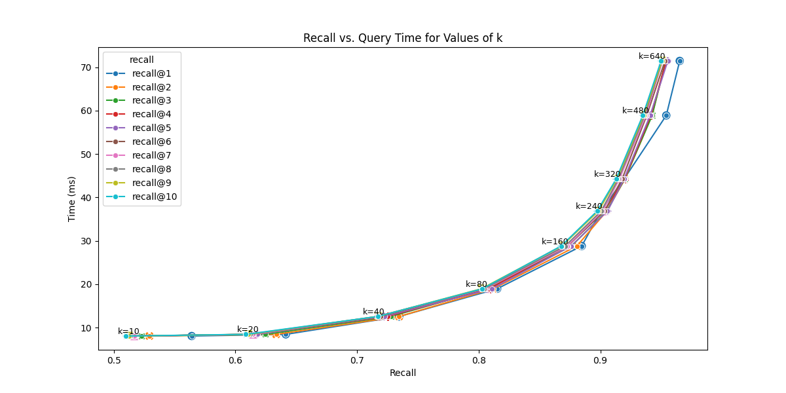

graph TD
A[VectorStoreManager] --> B[ChromaDB Client]
A --> C[Collection with HNSW]
A --> D[Embedding Function]
B --> E["Persistent Storage<br/>(./data/vector_store)"]
C --> F["add_documents()"]
C --> G["search()"]
C --> H["get_collection_stats()"]
style A fill:#1C355E,stroke:#1C355E,color:#fff
style B fill:#00C9A7,stroke:#1C355E,color:#fff
style C fill:#FF7A5C,stroke:#1C355E,color:#fff
style D fill:#9B8EC0,stroke:#1C355E,color:#fff
Vector Storage & Retrieval
RAG Foundations & Data Pipelines — Session 4
2026-06-11
A. Vector Store Landscape
Choosing where your vectors live
Agenda
- A. Vector Store Landscape — Comparing databases
- B. Indexing: Brute Force → ANN — Why search needs an index
- C. HNSW Indexing — Intuition, parameters, and an optional deep dive
- D. Vector Store Manager — Building the storage layer
- E. The RAG Service — Wiring up Retrieve → Augment → Generate
- F. Production Concerns — Updates, deletions, versioning
- G. Wrap-up — The complete pipeline so far
Why Specialized Databases?
Regular databases weren’t built for similarity search over high-dimensional vectors.
SQL Database: “Find rows where id = 42” — exact match, indexed by B-tree
Vector Database: “Find the 5 most similar vectors to this 1536-dimensional point” — approximate nearest neighbor search
The key difference: Vector DBs are built around a specialized index that trades small accuracy losses for massive speed gains — we unpack how that index works next.
Comparison Table
| Store | Type | Scale | Managed? | Best For | Cost |
|---|---|---|---|---|---|
| ChromaDB | Local/Server | ~1M | Self-hosted | Prototyping, small datasets | Free |
| Pinecone | Cloud-native | Billions | Fully | Enterprise-ready RAG | Usage-based* |
| Weaviate | Hybrid | Millions | Both | Flexibility, hybrid search | Free/Cloud |
| pgvector | PG extension | Millions | Self | Existing Postgres users | Free |
Our Choice: ChromaDB
Why ChromaDB for Development
- Zero operational overhead — no cloud account needed
- Runs locally — no network dependency
- Good performance up to ~1M vectors
- Python-native API — simple and intuitive
For production at scale → evaluate Pinecone, Weaviate Cloud or Qdrant … etc.
B. Indexing: Brute Force → ANN
Why search needs an index at all
The Indexing Problem
The brute-force retriever you built and baselined compared the query against every chunk vector. That’s a “flat” index — exact, and the baseline every optimization here is measured against.
The cost: one query at 1M vectors × 1536 dims ≈ 1.5 billion multiply-adds. Double the corpus, double the work — cost grows linearly with the collection.
Fine at thousands, hopeless at millions
Brute force is the right default for a few thousand vectors. At millions-to-billions with sub-100ms latency targets, scanning everything per query simply doesn’t fit the budget. We need to not look at most of the data.
The ANN Bargain
Approximate Nearest Neighbor (ANN) search trades a sliver of correctness for orders-of-magnitude speed — stop demanding the exact nearest neighbours.
The new quality metric: recall
- Recall = fraction of the true top-K the index returns
- Production runs at ~95–99% recall
The trade-off space
Every index balances four forces:
- Recall ↔︎ Latency (the headline trade-off)
- Memory footprint
- Build time
Tuning = moving along these axes.
Families of ANN Indexes
Three broad strategies for not scanning everything:
| Family | Idea | Recall@Speed | Memory | Notes |
|---|---|---|---|---|
| Flat | Compare to all (no index) | Exact, slow | Low | Baseline; great < ~10K vectors |
| IVF / Cluster | Partition into cells; probe a few nearest | Good | Low–Med | Probe nearest cells (nprobe); trains centroids first |
| Graph / HNSW | Navigable graph; hop toward the query | Best | Higher | Inserts self-build the graph; no training pass |
Why HNSW is the default
Graph methods lead the recall-vs-latency frontier and need no training pass — vectors slot straight in, so the index grows with your data instead of being fit up front. That’s why ChromaDB and most vector DBs default to HNSW.
What “Training” an Index Means
“Training” an index ≠ model training — no gradient descent, no labels. It’s a one-time pass over a sample of your vectors to fit the index’s structure, before any data is added.
IVF — runs k-means on a sample to place cell centroids, then adds each vector to the nearest cell (two phases).
HNSW — no training phase: you insert, and the graph organises itself as it grows.
Don’t conflate three things
Training fits the structure up front · indexing / building inserts your vectors · reindexing rebuilds from scratch (new model, metric, or M). You’ll call index.train() on IVF in the optimization session.
C. HNSW Indexing
The algorithm behind fast vector search
The Big Idea: Zoom In, Then Comb
A layered graph of your vectors — searched in two gears.
Top layers — zoom in 🛰️
- Sparse nodes, long-range links
- Big leaps → the right neighbourhood
- High-speed GPS, not a careful search
Layer 0 — comb 🔍
- Drop in, then widen out
ef_search= candidates kept in play- Thorough sweep — no near-miss next door
- Return the closest k (so
k ≤ ef_search)
Three knobs — only one is live
M and ef_construction shape the graph at build time; ef_search is the only dial you turn per query — wider comb, higher recall, slower search. (How the graph gets built is the optional deep dive that follows.)
How HNSW Works
Watch the two gears play out. Drag the ✕ query; Step through the descent (or Play). Toggle between the embedding space and the stacked HNSW layers — same search, two views.
Key Parameters
| Parameter | What It Controls | Default | Trade-off |
|---|---|---|---|
hnsw:space |
Distance metric | cosine |
Use cosine for text |
hnsw:M |
Links per node | 16 | More = better recall, more memory |
ef_construction |
Beam width when picking links | 200 | Higher = better index, slower build |
ef_search |
Query-time search depth | 10-100 | Higher = better recall, slower search |
Speed vs Accuracy

Varying ef_search or ‘k’ here
SOURCE: OpenSource Connections (2025), “Vector Search: Navigating Recall and Performance”. Standard Pareto frontier for HNSW.
Tuning Rules
Recommended Starting Points
M = 16— good for up to 1M vectorsef_construction = 200— solid build qualityef_search = 50-100— balance speed and recallspace = cosine— always for text embeddings
Key insight: You can increase
ef_searchat query time without rebuilding the index. In ChromaDB, usecollection.modify(metadata={"hnsw:search_ef": 200})to tune accuracy without downtime.
Optional Deep Dive: How HNSW Is Built
Safe to skip on a time budget — the algorithm behind the graph, following the FAISS source
One Graph, Three Procedures
Everything HNSW does reduces to three functions — the same three in faiss/impl/HNSW.cpp:
1 · Pick a level
random_level() — one random roll sets how high a new node reaches.
2 · Search
greedy_update_nearest + search_from_candidates — zoom in, then comb. Runs at query time and inside every insert.
3 · Insert
search → prune → link. Wire the new node to good neighbours.
The payoff: searching and building are the same walk. An insert just runs the search to find where the node belongs, then adds links. We’ll take the three in order.
Procedure 1 — Pick a Level
When a node is inserted, random_level() draws its top layer from an exponential decay:
\[\text{level} = \left\lfloor -\ln(U)\cdot \text{levelMult} \right\rfloor, \quad \text{levelMult} = \frac{1}{\ln M}, \quad U \sim \text{Uniform}(0,1)\]
What the roll does
- Most nodes land only on Layer 0
- Exponentially fewer reach each layer up
- The top holds a handful — the express lane
Why it’s just one number
Nobody designs the hierarchy. M sets the decay (levelMult = 1/ln M), so the dense-base / sparse-summit shape falls out of the rolls — that’s the whole “layers” story, one line of code.
Procedure 2 — Search: One Routine, Two Gears
The search you already saw, named as it appears in the code:
Upper layers — greedy_update_nearest (ef = 1). Hop to the single closest neighbour; when none is closer, drop a layer. The long links make this a few big jumps. Zoom in.
Base layer — search_from_candidates (beam of width ef). Keep the ef best candidates, expand their neighbours, return the top-K. Comb.
The same routine runs at insert time
At query time the beam width is ef_search. At insert time the same search_from_candidates runs with width ef_construction to find where the new node belongs. One routine, two callers — that’s why search and build share a code path.
The Search, in Full
The three phases map one-to-one onto the search demo’s captions — descent → beam → return top-k:
function hnsw_search(query, k, ef_search, graph):
# PHASE 1 — ZOOM IN (greedy, ef = 1 on the upper layers)
node = graph.entry_point # single entry at the top layer
for layer in range(graph.max_level, 0, -1): # down to layer 1
node = greedy_update_nearest(query, node, layer) # hop to closest, then drop
# PHASE 2 — COMB (beam of width ef_search on layer 0)
candidates = MinHeap(by distance to query) # frontier still to expand
results = MaxHeap(by distance to query) # best ef_search kept so far
visited = {node}
candidates.push(node); results.push(node)
while candidates not empty:
c = candidates.pop_closest()
# STOP: nearest unexpanded candidate is farther than our worst keeper
if dist(c, query) > results.worst() and results.size() >= ef_search:
break
for nb in graph.neighbors(c, layer=0):
if nb in visited: continue
visited.add(nb)
if dist(nb, query) < results.worst() or results.size() < ef_search:
candidates.push(nb); results.push(nb)
if results.size() > ef_search:
results.pop_worst() # keep only the ef_search best
# PHASE 3 — RETURN k (k <= ef_search)
return results.closest(k)Procedure 3 — Insert = Search → Prune → Link
To add a node: run the search (Procedure 2) at each layer with beam ef_construction to gather candidates — then don’t just keep the closest M.
Prune for diversity (shrink_neighbor_list). Keep a candidate c only if it’s closer to the new node than to any neighbour already kept. A near-duplicate of an existing link is dropped — each link should point in a new direction.
Link, both ways. Connect to the survivors, bidirectionally — up to M links per node, 2·M on the crowded base layer.
Why diversity beats “nearest”
The M literally-nearest points often cluster on one side — a dead end for a greedy walk arriving from elsewhere. Diverse links fan out around the node, so wherever a query comes from there’s a link pointing toward it. This prune is what makes the graph navigable.
The Insert, in Full
Procedures 1 → 2 → 3 in sequence — the build demo below animates exactly these steps:
function hnsw_insert(new_vec, M, ef_construction, graph):
# PROCEDURE 1 — pick this node's top layer (one random roll)
level = floor(-ln(U) / ln(M)), U ~ Uniform(0,1) # levelMult = 1/ln M
# ROUTE DOWN greedily (ef = 1) through layers above the new node's level
node = graph.entry_point
for layer in range(graph.max_level, level, -1):
node = greedy_update_nearest(new_vec, node, layer) # no links made up here
# INSERT from the node's top layer down to layer 0
entry = [node]
for layer in range(min(graph.max_level, level), -1, -1):
# PROCEDURE 2 reused: beam of width ef_construction gathers candidates
cands = search_from_candidates(new_vec, entry, ef_construction, layer)
# PROCEDURE 3: diversity prune, then link both ways
Mlayer = (2 * M) if layer == 0 else M # M_0 = 2M on the crowded base
chosen = shrink_neighbor_list(new_vec, cands, Mlayer) # keep diverse, not just nearest
for nb in chosen:
graph.add_edge(new_vec, nb, layer) # bidirectional
if graph.degree(nb, layer) > Mlayer:
graph.shrink_neighbor_list(nb, Mlayer) # re-prune the over-full neighbour
entry = chosen # carry down to the next, denser layer
if level > graph.max_level: # this node climbed highest
graph.max_level = level
graph.entry_point = new_vecWatch the Index Build
Press Step to walk one insert — roll a level, search to the right spot, prune to diverse candidates, link the survivors. Next Insert moves on; watch the hierarchy emerge from the random rolls.
D. Vector Store Manager
Building the storage layer
Architecture
Init + HNSW Config
class VectorStoreManager:
def __init__(self, persist_directory="./data/vector_store",
collection_name="research_papers"):
# Persistent client — survives restarts
self.client = chromadb.PersistentClient(
path=persist_directory,
settings=Settings(anonymized_telemetry=False)
)
# Collection with optimized HNSW
self.collection = self.client.get_or_create_collection(
name=collection_name,
metadata={
"hnsw:space": "cosine",
"hnsw:construction_ef": 200,
"hnsw:search_ef": 100,
"hnsw:M": 16,
}
)Batch Ingestion
def add_documents(self, documents, batch_size=100):
"""Add documents with embeddings in batches."""
for i in range(0, len(documents), batch_size):
batch = documents[i:i + batch_size]
ids, embeddings, metadatas, texts = [], [], [], []
for doc in batch:
# Deterministic ID prevents duplicates
content_hash = hashlib.md5(
doc['text'].encode()).hexdigest()
ids.append(f"doc_{content_hash}")
embeddings.append(doc["embedding"])
metadatas.append(doc.get("metadata", {}))
texts.append(doc["text"])
self.collection.add(
embeddings=embeddings, documents=texts,
metadatas=metadatas, ids=ids)Search
def search(self, query_embedding, n_results=5,
filter_conditions=None):
"""Search for similar documents."""
results = self.collection.query(
query_embeddings=[query_embedding],
n_results=n_results,
where=filter_conditions,
include=["documents", "metadatas", "distances"]
)
# Convert distance to similarity score
formatted = []
for i in range(len(results["documents"][0])):
formatted.append({
"text": results["documents"][0][i],
"metadata": results["metadatas"][0][i],
"score": 1 - results["distances"][0][i]
})
return formattedDedup Strategy
Preventing Duplicates
Use content-based hashing for document IDs:
Re-running ingestion on the same documents won’t create duplicates — reuse the deterministic ID and upsert to overwrite in place. (Plain add on an existing ID is ignored with a warning rather than updated, so prefer upsert when content may change.)
E. The RAG Service
Wiring it all together
The RAG Loop
sequenceDiagram
participant User
participant RAGService
participant EmbeddingGen
participant VectorStore
participant LLM
User->>RAGService: "What is FlashAttention?"
RAGService->>EmbeddingGen: embed_query(question)
EmbeddingGen-->>RAGService: [0.1, 0.4, ...] vector
RAGService->>VectorStore: search(vector, k=5)
VectorStore-->>RAGService: [Chunk A, Chunk B, Chunk C]
RAGService->>RAGService: construct_prompt(query, chunks)
RAGService->>LLM: generate(prompt)
LLM-->>RAGService: "FlashAttention is..."
RAGService-->>User: Answer + Sources
RAGService Class
class RAGService:
"""Orchestrates Retrieval + Generation."""
def __init__(self):
self.embedding_gen = EmbeddingGenerator()
self.vector_store = VectorStoreManager()
self.model = "openrouter/deepseek/deepseek-v4-flash:free"
async def answer_question(self, query: str):
# 1. RETRIEVE
query_vector = await self.embedding_gen.embed(query)
results = self.vector_store.search(query_vector, n_results=5)
# 2. AUGMENT
context = self._build_context(results)
prompt = f"Context:\n{context}\n\nQuestion: {query}"
# 3. GENERATE
response = litellm.completion(
model=self.model,
messages=[
{"role": "system", "content": SYSTEM_PROMPT},
{"role": "user", "content": prompt}
], temperature=0.3)
return {"answer": response.choices[0].message.content,
"sources": [r['metadata'] for r in results]}The Three Steps
1. Retrieve
- Embed the query
- Search vector store
- Get top-K chunks with scores
- Filter by metadata if needed
2. Augment
- Format retrieved chunks
- Build system prompt
- Inject context into user message
- Stay within token budget
3. Generate
- Call LLM with augmented prompt
- Low temperature for accuracy
- Parse response
- Return answer + sources
F. Production Concerns
Keeping your knowledge base alive
Living Knowledge Base
Your document corpus changes. You need strategies for:
1. Incremental Updates — Add new documents without rebuilding
2. Document Deletion — Remove outdated or incorrect content
3. Re-embedding — When you change models or chunking strategies
Update / Delete
def update_document(self, doc_id, new_text,
new_embedding, new_metadata):
"""Update = delete + re-add."""
self.collection.delete(ids=[doc_id])
self.collection.add(
embeddings=[new_embedding],
documents=[new_text],
metadatas=[new_metadata],
ids=[doc_id])
def delete_by_metadata(self, filter_conditions):
"""Delete all docs matching a metadata filter."""
results = self.collection.get(where=filter_conditions)
if results["ids"]:
self.collection.delete(ids=results["ids"])Versioning
def create_versioned_collection(self, version_suffix):
"""Create a new version when changing models."""
new_name = f"{self.collection_name}_{version_suffix}"
return self.client.create_collection(
name=new_name,
metadata={
"parent_collection": self.collection_name,
"created_at": datetime.now().isoformat(),
"version": version_suffix,
})When you change embedding models or chunking strategies, you need a new collection. Old embeddings are incompatible with new model vectors.
Pitfalls Table
| Pitfall | Symptom | Solution |
|---|---|---|
| Memory explosion | Crash on large batches | Process in batches of 100-500 |
| Slow searches | Latency > 100ms | Lower ef_search, use SSD |
| Inconsistent results | Different scores for same query | Verify same embedding model |
| Metadata bloat | Large collection file | Store only essential metadata |
G. Wrap-up
The complete pipeline so far
Complete Pipeline
flowchart LR
A["Raw Docs"] --> B["Ingest &<br/>Clean"]
B --> C["Chunk"]
C --> D["Embed"]
D --> E[("Vector<br/>Store")]
F["User Query"] --> G["Embed<br/>Query"]
G --> E
E --> H["Top-K<br/>Chunks"]
H --> I["LLM<br/>Generate"]
I --> J["Answer +<br/>Sources"]
style A fill:#9B8EC0,stroke:#1C355E,color:#fff
style B fill:#9B8EC0,stroke:#1C355E,color:#fff
style C fill:#00C9A7,stroke:#1C355E,color:#fff
style D fill:#00C9A7,stroke:#1C355E,color:#fff
style E fill:#1C355E,stroke:#1C355E,color:#fff
style F fill:#FF7A5C,stroke:#1C355E,color:#fff
style G fill:#FF7A5C,stroke:#1C355E,color:#fff
style H fill:#FF7A5C,stroke:#1C355E,color:#fff
style I fill:#FF7A5C,stroke:#1C355E,color:#fff
style J fill:#1C355E,stroke:#1C355E,color:#fff
Built vs Missing
What We’ve Built
- Document ingestion & cleaning
- Three chunking strategies
- Embedding generation at scale
- Vector store with HNSW index
- Basic RAG Service (R→A→G)
What’s Still Missing
- Handles complex queries poorly
- No keyword search fallback
- No re-ranking quality gate
- No citation formatting
- Gains not yet re-measured against the baseline
References & Evidence
- HNSW Algorithm: Malkov & Yashunin (2018) - Efficient and robust approximate nearest neighbor search using Hierarchical Navigable Small World graphs.
- HNSW Reference Implementation: faiss/impl/HNSW.cpp - FAISS source for the level-pick, search, and insert procedures shown in the deep dive.
- Pinecone Pricing: Pinecone Serverless - Usage-based pricing model overview.
- ChromaDB Configuration: Official ChromaDB Docs - Details on tuning HNSW parameters.
- Vector DB Benchmarks: ANN-Benchmarks - Evidence for scale and latency claims for various algorithms.
Key Takeaways
- Vector databases use specialized indexes (HNSW) for fast approximate search
- ChromaDB is ideal for development; Pinecone/Weaviate for production scale
- HNSW parameters (
M,ef_construction,ef_search) control the speed-accuracy trade-off - Batch ingestion with content-based hashing prevents duplicates
- The RAG Service orchestrates Retrieve → Augment → Generate
- Version your collections when changing embedding models or chunking strategies